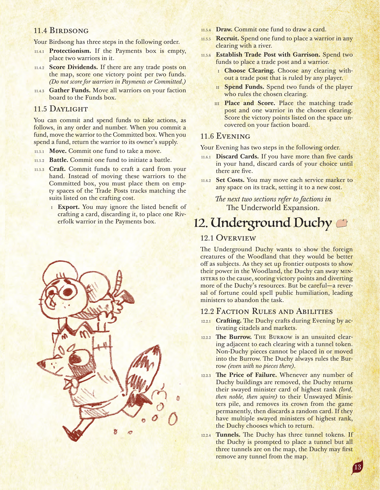
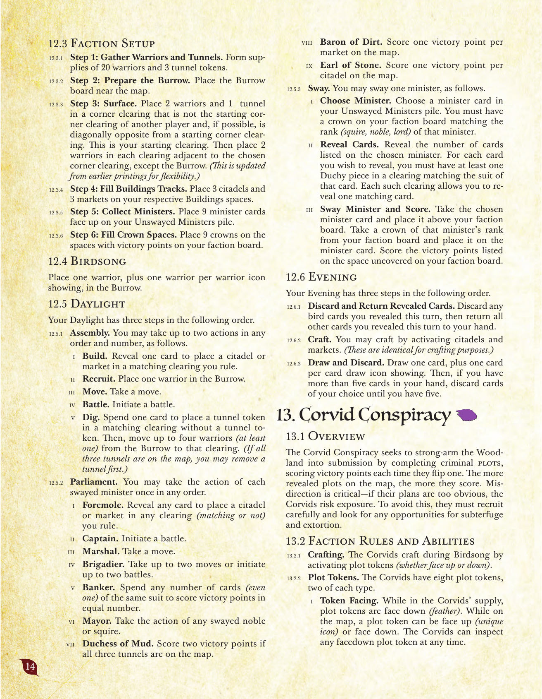

山の拡張：地底公領・黒烏結社
原題: The Underworld Expansion／『根の法典』第12〜13章。日本語版は「ルート 拡張 〜そびえる山のいきもの乱記〜」としてArclightGamesより発売されている。
12. 地底公領
12.1 概要
地底公領は、森の異邦の生き物たちに、自分たちの臣下になった方が暮らしが良くなることを示したいと考えている。森における自らの力を示すために前線基地を築きながら、公領は大臣たちを説得して陣営に引き入れ、勝利点を獲得し、公領のさらなる資源を呼び込むことができる。しかし注意せよ――運勢の逆転は公の恥辱を招き、大臣たちにその役目を放棄させてしまうかもしれない。
12.2 派閥固有のルールと能力
- クラフト。 公領は夕闇フェイズ中、城塞と市場を発動することでクラフトする。
- 巣穴。 「巣穴」は、トンネルトークンのある各開拓地に隣接する、スートを持たない開拓地である。公領以外の駒を巣穴に配置・移動させることはできない。公領は常に巣穴を支配する（駒が1つもない場合でも）。
- 失敗の代償。 公領の建物が何個除去されることになっても、公領は最も高い階級（侯爵、次いで貴族、次いで騎士）の説得済みの大臣カードを「未説得の大臣」の山に戻し、その大臣の冠をゲームから永久に除去し、その後ランダムなカードを1枚捨てる。最高位の説得済みの大臣が複数いる場合は、公領がどれを戻すか選ぶ。
- トンネル。 公領はトンネルトークンを3個持つ。公領がトンネルを配置するよう指示されたが3個すべてが地図上にある場合、公領はまず地図上の任意のトンネルを除去してよい。
12.3 派閥固有の準備手順
- ステップ1：兵士とトンネルの準備。 兵士20個とトンネルトークン3個の供給を用意する。
- ステップ2：巣穴の準備。 「巣穴」ボードを地図の近くに置く。
- ステップ3：地上進出。 他のプレイヤーの開始隅開拓地ではなく、可能であれば他のプレイヤーの開始隅開拓地と対角になる隅の開拓地に、兵士2体とトンネル1個を置く。これが自分の開始開拓地となる。その後、選んだ隅開拓地に隣接する各開拓地（巣穴を除く）に兵士2体ずつを置く。
- ステップ4：建物トラックの充填。 自分の対応する「建物」枠に城塞3つと市場3つを置く。
- ステップ5：大臣の収集。 大臣カード9枚を表向きで「未説得の大臣」の山に置く。
- ステップ6：冠の枠の充填。 自分の派閥ボード上の勝利点が記載された枠に冠9個を置く。
12.4 鳥歌フェイズ
「巣穴」に兵士を1体、さらに表示されている兵士アイコン1つにつき兵士を1体置く。
12.5 昼光フェイズ
昼光フェイズには、以下の順で3つのステップがある。
- 議事。 以下のアクションを最大2回まで、任意の順序・任意の回数で行ってよい。
- 建設。 カードを1枚公開して、自分が支配する一致する開拓地に城塞または市場を配置する。
- 徴募。 「巣穴」に兵士を1体置く。
- 移動。 移動を1回行う。
- 戦闘。 戦闘を開始する。
- 掘削。 カードを1枚消費して、トンネルトークンのない一致する開拓地にトンネルトークンを1つ置く。その後、「巣穴」から兵士を最大4体（少なくとも1体）、その開拓地へ移動させる。（3個のトンネルすべてが地図上にある場合、先にトンネルを1つ除去してよい。）
- 議会。 説得済みの各大臣のアクションを、任意の順序で1回ずつ行ってよい。
- もぐら頭。 任意のカードを1枚公開して、自分が支配する任意の開拓地（一致するかどうかにかかわらず）に城塞または市場を配置する。
- 隊長。 戦闘を開始する。
- 元帥。 移動を1回行う。
- 准将。 移動を最大2回、または戦闘を最大2回開始する。
- 銀行家。 同じスートのカードを任意の枚数（1枚でも可）消費して、それと同じ枚数の勝利点を得る。
- 市長。 説得済みの貴族または騎士のいずれかのアクションを行う。
- 泥の公爵夫人。 3個のトンネルすべてが地図上にあれば、勝利点を2点得る。
- 土の男爵。 地図上の市場1つにつき勝利点を1点得る。
- 石の伯爵。 地図上の城塞1つにつき勝利点を1点得る。
- 説得。 大臣を1人説得してよい。
- 大臣の選択。 「未説得の大臣」の山から大臣カードを1枚選ぶ。その大臣の階級（騎士・貴族・侯爵）に一致する冠を自分の派閥ボード上に持っていなければならない。
- カードの公開。 選んだ大臣に記載された枚数のカードを公開する。公開したいカードごとに、そのカードのスートと一致する開拓地に公領の駒を少なくとも1つ持っていなければならない。そのような開拓地1つにつき、一致するカードを1枚公開できる。
- 大臣の説得と得点。 選んだ大臣カードを取り、自分の派閥ボードの上に置く。その大臣の階級に対応する冠を自分の派閥ボードから取り、その大臣カードの上に置く。自分の派閥ボード上で露出した枠に記載された勝利点を獲得する。
12.6 夕闇フェイズ
夕闇フェイズには、以下の順で3つのステップがある。
- 公開したカードの捨てと返却。 このターンに公開した鳥カードはすべて捨て、その他の公開したカードはすべて手札に戻す。
- クラフト。 城塞と市場を発動してクラフトしてよい。（これらはクラフトの目的において同一のものとして扱う。）
- カードを引いて捨てる。 カードを1枚引き、さらに表示されているカードドローアイコン1つにつき1枚引く。その後、手札が5枚を超えている場合は、5枚になるまで好きなカードを捨てる。

原書 p.13
13. 黒烏結社
13.1 概要
黒烏結社は、犯罪計画を完遂することで森を屈服させようとし、1つを表向きにするたびに勝利点を得る。地図上に公開された計画が多いほど、より多くの点を得る。欺くことが肝要である――計画があまりに露骨であれば、黒烏は露見の危険を冒すことになる。これを避けるため、彼らは慎重に徴募を行い、策略や恐喝の機会を常にうかがわなければならない。
13.2 派閥固有のルールと能力
- クラフト。 黒烏は鳥歌フェイズ中、陰謀トークン（表向き・裏向きを問わない）を発動することでクラフトする。
- 陰謀トークン。 黒烏は陰謀トークンを8個持ち、4種類×2個ずつである。
- トークンの向き。 黒烏の補充箱にある間、陰謀トークンは裏向き（羽根の図柄）である。地図上にある間、陰謀トークンは表向き（固有のアイコン）または裏向きにできる。黒烏はいつでも、裏向きの陰謀トークンを検分できる。
- 配置の上限。 各開拓地は陰謀トークンを1つしか保持できない。
- 身軽。 黒烏は、出発地・目的地の開拓地を誰が支配しているかにかかわらず移動できる。
- 露見。 自分のターン中、裏向きの陰謀トークンのある開拓地に派閥駒を持つ敵は、何度でも、黒烏に一致するカードを見せて、その開拓地にある陰謀トークンの種類を推測できる。間違っていれば黒烏は「いいえ」と言い、その敵はそのカードを黒烏に渡す。正しければ、その敵はその陰謀トークンを除去する（勝利点を1点得る）。これが「襲撃」トークンを除去するものであれば、兵士は配置されない。（自分のターンの最後のステップを始めた後は、露見を使うことはできない。1.4.3参照。）
- 潜伏工作員。 防御側として戦闘する際、黒烏が戦闘の開拓地に裏向きの陰謀トークンを（無防備であっても）持っている場合、追加ヒットを1つ与える。
13.3 派閥固有の準備手順
- ステップ1：兵士と陰謀の準備。 兵士15個と裏向きの陰謀トークン8個の供給を用意する。
- ステップ2：散開。 各スートの任意の開拓地に兵士を1体ずつ置く（合計3体）。
13.4 鳥歌フェイズ
鳥歌フェイズには、以下の順で3つのステップがある。
- クラフト。 陰謀トークン（表向き・裏向きを問わない）を発動して、手札のカードをクラフトしてよい。
- 陰謀の表向き。 何度でも、黒烏の兵士がいる開拓地の陰謀トークンを1つ表向きにし、地図上の表向きの陰謀トークン1つにつき（今表向きにしたものも含めて）勝利点を1点得て、それが爆弾または強要であればその表向き効果を解決する。
- 徴募。 1ターンに1回、任意のカードを1枚消費して、一致する各開拓地に兵士を1体ずつ置く。（鳥を消費する場合は、兵士を置くスートを1つ選ぶ。）
13.5 昼光フェイズ
以下のアクションを最大3回まで、任意の順序・任意の回数で行ってよい。
- 移動。 移動を1回行う。
- 陰謀の配置。 陰謀トークンのない開拓地から黒烏の兵士1体（さらにこのターンに配置した陰謀1つにつき黒烏の兵士1体）を除去して、そこに裏向きの陰謀トークンを1つ置く。
- 戦闘。 戦闘を開始する。
- 詐術。 地図上の2つの陰謀トークンを入れ替える。両方の陰謀トークンは、ともに表向きまたはともに裏向きでなければならない。
13.6 夕闇フェイズ
夕闇フェイズには、以下の順で2つのステップがある。
- 奮起。 夕闇フェイズにカードを引かないことを選んだ場合、昼光フェイズに記載されたアクションを1つ行ってよい。
- 引く。 カードを1枚引き、さらに地図上の表向きの強要トークン1つにつき1枚引く。その後、手札が5枚を超えている場合は、5枚になるまで捨てる。
13.7 陰謀トークン一覧
- 爆弾。 爆弾トークンが表向きになるたびに、その開拓地にあるすべての敵駒を除去し、その後その爆弾トークンを除去する。
- 罠。 罠トークンが表向きである間、その開拓地には敵駒を配置・移動させることができない。
- 強要。 強要トークンが表向きになるたびに、その開拓地に派閥駒を持つ各敵プレイヤーからランダムなカードを1枚取る。強要トークンが表向きである間、夕闇フェイズにもう1枚カードを引く。
- 襲撃。 襲撃トークンが除去されるたびに（表向き・裏向きを問わない）、その襲撃が除去された開拓地に隣接する各開拓地に兵士を1体ずつ置く。（露見によって襲撃が除去された場合はこの効果を無視する。）
補足
以降の章は宝の拡張（Marauder Expansion）に含まれる派閥を扱う。詳細は
宝の拡張のページを参照。

原書 p.14